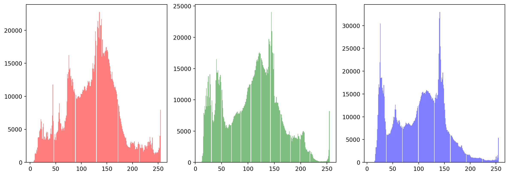

I’ve made bagels for a long time, usually bringing them into the office and leaving them out in the lunch-room for co-workers, interns, and others to eat them. If you’d just like to have the recipe and be on your way it is Peter Reinhart’s New York Style Bagels With Wild Sourdough. I use molasses instead of barley malt, and ~30g less flour since I found 4 cups to make them too tough — the gears on my KitchenAid were eventually stripped from mixing the dough. I’ve had it from at least one actual New Yorker that they pass the test.
I would often anonymously leave them in there and pat myself on the back for so selflessly sharing the gift of baking with people without need for thanks and praise. Of course this was inwardly dishonest, as I was going for the having my-cake-and-eating-it-too situation of everyone knowing who provided the bagels, but me not putting too much effort into having it be known such that I can claim pure intentions.
Anyway, the pandemic obviously killed the bagel sharing situation in the office. Too bad too since I was on a long streak of having bagels in the break room every Monday morning. For a while I tried to deliver to co-workers houses, distribute to neighbors etc., but did not move nearly the same volume as before. Once I moved out of my apartment and started taking classes again the bagel production went to essentially zero.
Recently I’ve tried to find time to make bagels again and have fixed a problem that plagued me previously - overproofing. Essentially the recipe is from a professional baker who has a walk in fridge that maintains a super consistent low temperature and can leave the dough in there for 24 hours, so I cut the proofing time to ~10 hours overnight, which seems to consistently produce a nice product. Anyway, here they are:
Figure 1 shows histograms of the three color channels for the single bagel image. From the red color channel, we can see that the bagel is very tasty.
import numpy as npfrom PIL import Imageimport matplotlib.pyplot as plt# load an imageimg = np.array(Image.open('bagel-single.jpg'))# histogram of the three color channelsfig, axs = plt.subplots(1, 3, figsize=(15, 5))axs[0].hist(img[:,:,0].flatten(), bins=256, color='r', alpha=0.5);axs[1].hist(img[:,:,1].flatten(), bins=256, color='g', alpha=0.5);axs[2].hist(img[:,:,2].flatten(), bins=256, color='b', alpha=0.5);

Figure 1: Histograms of the three color channel intensities of the single bagel image.
If you were invested in the GPT-5 part of the title I am very sorry.